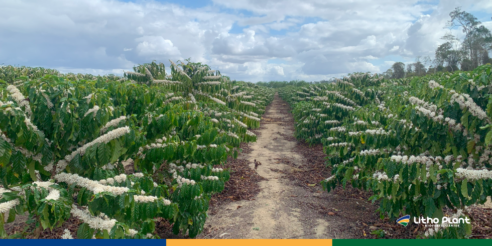
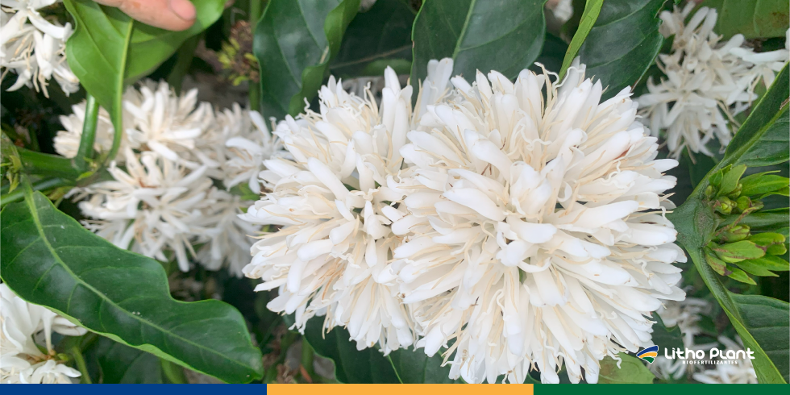

Benefícios da Primavera Para a Agricultura: Invista em Boas Práticas

A primavera é uma das épocas mais aguardadas pelos produtores rurais, pois marca o início de um ciclo importante para a agricultura, ao oferecer condições ideais para o crescimento das plantas e o planejamento da próxima safra.
Com o aumento gradual das temperaturas e a elevação dos níveis de umidade, essa estação favorece a fotossíntese, o desenvolvimento vegetativo e a retomada do crescimento após o inverno, criando um ambiente muito mais favorável para semeadura e implantação de novas áreas.
A Litho Plant, indústria de biofertilizantes, está comprometida em fornecer soluções sustentáveis e eficientes que ajudam as plantas a expressarem seu máximo potencial produtivo, com foco em nutrição equilibrada e regeneração do solo.
Continue lendo para entender como as boas práticas agrícolas e o uso de biofertilizantes podem transformar a produtividade da sua lavoura durante a primavera.
A primavera e seus efeitos positivos na agricultura
Durante a primavera, o aumento gradual da temperatura, aliado ao equilíbrio entre luz solar e umidade, cria condições ideais para o desenvolvimento das plantas e para o manejo eficiente das lavouras.
É o momento perfeito para investir em técnicas de preparação do solo e aplicação de biofertilizantes, que garantem o sucesso das culturas ao longo do ciclo produtivo.

Clima mais ameno e umidade adequada impulsionam o arranque das lavouras na primavera.Preparação do solo e uso de biofertilizantes
A aplicação de biofertilizantes é essencial durante a primavera para garantir nutrição equilibrada e a recuperação do solo. Esses insumos desempenham papel fundamental na agricultura sustentável, fornecendo nutrientes que melhoram a estrutura do solo e promovem a atividade microbiana.
A Litho Plant desenvolve produtos que ajudam os agricultores a regenerar o solo e aumentar a produtividade das culturas nesta estação, fortalecendo raízes e favorecendo um desenvolvimento mais uniforme das plantas.

Plantas bem nutridas suportam melhor oscilações de clima típicas da primavera.Enfrentando desafios climáticos e aumentando a produtividade
Embora a primavera traga muitas oportunidades, ela também apresenta desafios, como variações bruscas de temperatura e chuvas irregulares em algumas regiões. É fundamental que as plantas estejam bem nutridas e estruturadas para enfrentar esses momentos de estresse.
Os biofertilizantes da Litho Plant são formulados para fortalecer as plantas e aumentar sua resistência a variações climáticas, ajudando a otimizar o uso de água e nutrientes mesmo em condições adversas.
Biofertilizantes: aliados da sustentabilidade e produtividade
A utilização de biofertilizantes é uma prática cada vez mais adotada por produtores que buscam aumentar a eficiência e reduzir o impacto ambiental. Esses produtos nutrem as plantas, melhoram a estrutura do solo e favorecem a atividade microbiana.
Na primavera, quando as plantas estão em fase de crescimento acelerado, uma nutrição equilibrada via solo e via foliar é essencial para manter o ritmo de desenvolvimento sem causar desequilíbrios.
Planejamento agrícola na primavera: como a Litho Plant pode ajudar
O planejamento eficiente é fundamental para aproveitar todos os benefícios que a primavera oferece. A Litho Plant ajuda produtores a planejar suas safras com precisão, fornecendo orientações e soluções personalizadas para cada tipo de cultivo.
Além disso, a empresa oferece produtos específicos para proteger as plantas contra estresses ambientais, como protetores solares agrícolas que ajudam a evitar escaldadura em folhas e frutos quando a radiação aumenta.
Conclusão
A primavera é uma estação crucial para a agricultura, oferecendo condições ideais para o crescimento das plantas e o planejamento da próxima safra. Aproveitar esse período com boas práticas de manejo e uso estratégico de biofertilizantes é uma das formas mais seguras de aumentar produtividade e sustentabilidade.